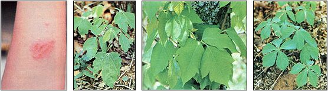

Show me a homestead that includes a little patch of woods or the tiniest pond, and I'll show you land that likely harbors poison oak and/or poison ivy. The two plants are of different species, but contact with either results in the same itchy symptoms - and if you're allergic to one or both of them (and most folks are), these leafy pests can sometimes make the "simple life" very, very complicated.
Over the past five years, I've learned more than I ever wanted to know about the "terrible two," and most of that education was gained the hard way. In fact, my first poison oak outbreak was so severe that even the doctor looked at my swollen, blistered legs and stepped back in alarm! More than a score of other attacks - and a good bit of valuable trial-and-error learning - followed that memorably miserable August. Today, I've learned to share my two acres peacefully (more or less) with the dreaded enemy.
The best way to avoid "catching" poison ivy or oak rash is to steer clear of the toxic plants. Unfortunately, few people learn how to identify them until after they've had a dose.
Poison ivy (Rhus radicans) is much more widespread - occurring throughout most of the United States - than is its "western" cousin poison oak (Rhus diversiloba), but both species have alternate leaves with three leaflets per frond. Poison ivy tends to vine (climbing trees, walls, and other upright supports), while poison oak is usually a knee-high shrub growing in shady areas. Both plants are deceptively attractive, and invite the unknowing stroller to collect bunches of the decorative foliage.
It's important to know, too, that the dangerous plants are just as toxic during the winter months as they are in summer. And if there's any itch worse than that of poison ivy/oak dermatitis during the hot weather, it's the same rash when it's under a heavy wool sweater! Remember always to wear protective gloves if you're working in infested areas during the dormant season. When cutting firewood or pruning trees, beware of leafless vines!
Obviously, avoiding the troublemakers is the best prevention. But what do you do when your little one proudly hands you a poison oak tri-leaf amid a specially picked bouquet of wildflowers, or when you gather an armload of dormant poison ivy along with your firewood, or when, after spending an entire afternoon clawing roots from a newly cleared garden plot, you notice (too late) that some of the roots belonged to one of the troublesome twosome?
Well, if you see the error of your ways within 15 minutes after first touching the plants, you may be in luck. Contact dermatitis is caused by the raw resin in the leaves, stems, and roots. A thorough scrubbing of the affected area, with an oil solvent, will wash away the resin before it causes irritation. Some authorities recommend using vinegar, rubbing alcohol, cool mugwort tea, or bleach for this purpose. Other sources suggest the use of more powerful oil solvents such as gasoline, nail polish remover, turpentine, paint thinner, or kerosene. (Be warned, however, that the harsh substances can be dangerous themselves if absorbed through the skin.)
After you've scrubbed with your chosen solvent, wash with cool water - to keep your pores closed - and a mild soap. Then simply wait and cross your fingers.
If you come in contact with either plant without realizing it, you'll find that your skin will begin to itch even before the rash of tiny blisters develops on the surface. As soon as you become aware of your mistake, go ahead and wash with an oil solvent. Even if it's a bit late, this "bath" will help remove any leftover resin deposits on the skin, and may prevent the rash from spreading. Contrary to popular belief, breaking the blisters will not spread the dermatitis. And you can tell your friends to relax, because the rash isn't contagious.
During my severe first attack of contact dermatitis, I filled a shelf with sprays, salves, and lotions - all of which failed to relieve my itching or dry up the rash. I even tried one doctor-prescribed treatment that consisted of smearing my legs with an ointment and then enclosing them in plastic wrap. Believe me, on a sizzling August day, this particular "cure" was worse than the rash itself!
Finally, I stumbled upon a treatment that worked for me. I discovered that the juice from aloe vera leaves (which is an active ingredient in many over-the-counter first aid creams) contains healing agents which assist the body in repairing damaged tissue. The cool soothing gel helps relieve itching for up to three hours. It doesn't stain clothes, and won't gum up after several applications, either. And if you get a major rash - one that would force the leaf-by-leaf sacrifice of an entire windowsill plant to obtain enough healing juice - you can purchase aloe gel in most health food stores. (You may find that cold packs, soapy baths, and even occasional screams also provide some welcome relief.)
And, even after your (approximately) two-week ordeal has passed, you might face some further discomfort: It isn't uncommon for individuals to break out in a secondary rash resembling prickly heat. Such an irritation is a reaction to the previous dermatitis, and can linger for an additional week. And the reaction rash, even though not as itchy, may be more widespread than was the original.
Some people are less susceptible to contact dermatitis than others, but it's worth remembering that even those who have, for years, been "immune" to poison ivy or oak may suddenly become hypersensitive to it. For instance, antibiotics seem to lower one's natural resistance to contact infections. The immunity will sometimes return after it's once lost, although it may take years to build up resistance again. In the meantime; such folks should be extremely cautious in areas that could harbor the plants.
In heavily infested locales, poison ivy and oak are almost impossible to eliminate. You'll find that birds consume the plants' white berries and - as a result of seeds spread in their droppings - additional shoots will invariably sprout every spring. However, there are several things you can do to bring an infestation under control.
First of all, never burn poison ivy or oak. Breathing the smoke of such wood can cause dangerous - and possibly lethal - inflammation of the nasal passages, throat and lungs.
Small patches of the plants can be kept under control with an aggressively wielded hoe. They'll eventually die off if not allowed to berry for several years. If you're faced with large clusters, see if you can recruit a few goats to help out. The critters love to munch on poison ivy or oak, and they have no difficulty maneuvering through the dense thickets or undergrowth where the plants usually thrive.
If the toxic leaves show up in open areas around your homestead, you can use a mower to cut back the "crop." Be sure to wear heavy pants and boots while doing so, though, because the resin exposed by the mower blade can be particularly infectious. Don't handle the outsides of your boots after performing such a chore, and be sure to wash your clothing in warm, soapy water before wearing it again.
You should know, too, that even heavy leather work gloves aren't foolproof hand protection, especially in hot weather. The irritating plant resin can be "sweated" right through the leather.
I've managed to clear poison oak from our immediate yard area and from the pathways to our garden. And, although it'd be all but impossible to remove every one of the poisonous plants from the rest of our two acres, we've learned how to coexist with our dangerous "neighbors". Since we can now identify the plants, poison oak and ivy no longer limit our outdoor activities. We merely give them the same respect accorded rattlesnakes and fiddleback spiders, and accept the fact that the notorious tri-leaf twins have become part of our simple life.
|
 SANDRA DARK LEFT TO RIGHT: These ridges of blisters are characteristic of a poison ivy or poison oak rash, and are a sure sign that you've wandered through a patch of the toxic plants. Contrary to popular belief, breaking the blisters will not spread the dermatitis. . . The best way to avoid catching the rash is to steer clear of the skin-irritating foliage. Poison oak is a shrubby ground plant that favors shaded woodland areas . . . while poison ivy vines, on the other hand, tend to climb trees or other upright supports. Both species produce a deceptively attractive lush green growth. Learn to recognize the plants by their alternate leaves with three leaflets per frond. . . and you won't mistake the inoffensive five-leaved Virginia creeper vine for its dangerous tri-leaved neighbors |
|
|